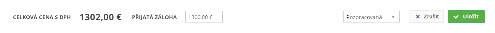

Stručný popis
Část formuláře objednávky – Dokončení objednávky (viz ).
Uživatelské rozhraní
Drátový diagram

Přehled UI komponent
| Callout | Komponenta | Nadpis | Typ komponenty | Příklad hodnoty | Hodnota | Výchozí hodnota | Formát | Zpřístupněná | Viditelná | Chování | Validace | Poznámka |
|---|---|---|---|---|---|---|---|---|---|---|---|---|
| 1 | Vyčištění formuláře | – | Button
| – | – | – | – | – | Pokud je Objednávka v jednom z uvedených stavů (atribut Stav):
| Vyčištění formuláře | – | – |
| 2 | Celková cena | Viz Celková cena – nadpis. | TextBox | 1 302,00 € | Viz Celková cena – výpočet. | – | Nikdy | Pokud je v atributu Položky objednávky entity Objednávka alespoň jedna Položka objednávky, kde hodnota atributu Podle smlouvy je rovna FALSE. | – | – | Nadpis liší dle vybraného Objednavatele – viz Celková cena – nadpis. | |
| 3 | Přijatá záloha | Přijatá záloha | TextBox | 1 300,00 € | Entita Objednávka. | 0 | Dle atributu Stav entity Objednávka:
| Pokud je v atributu Položky objednávky entity Objednávka alespoň jedna Položka objednávky, kde hodnota atributu Podle smlouvy je rovna FALSE. | Možnost zadat pouze čísla a oddělovač desetinných míst. | Hodnota z uzavřeného intervalu od 0 do 100 000. | – | |
| 4 | Stav objednávky | Stav | ComboBox | Rozpracovaná | Entita Objednávka. | Rozpracovaná | Dle atributu Stav entity Objednávka:
| Vždy | – | – | – | |
| 5 | Zrušení změn objednávky | Storno | Button | Storno | Storno | Storno | – | Vždy | Vždy | Liší se dle UC, který formulář používá:
| – | – |
| 6 | Potvrzení změn objednávky | Uložit | Button | Uložit | Uložit | Uložit | – | Vždy | Vždy | Liší se dle UC, který formulář používá:
| – | – |
Chování
Vyčištění formuláře
Při vyčištění formuláře dojde ke smazání obsahu jednotlivých polí – akce však není provedena pro všechna pole.
| Skupina | Komponenty |
|---|---|
| Nadpis formuláře | Nejsou prováděny žádné akce. |
| Provozovna | Je vyčištěn pouze obsah pole Poznámka (komponenta 3). |
| Objednavatel | Jednotlivá pole jsou nastavena na výchozí hodnotu – viz Přehhled UI komponent, sloupec Výchozí hodnota. |
| Položky objednávky | Jsou odebrány všechny Položky objednávky. To následně vyvolá přidání nové Položky objednávky ve výchozím stavu. |
| Dokončení objednávky | Je vyčištěn pouze obsah pole Přijatá záloha (komponenta 3). |
TODO: Do budoucna bude informace doplněna do tabulek s přehledem UI komponent.
Celkové cena – nadpis
- Pokud není nastaven žádný Objednavatel, systém zobrazuje nadpis Celkové ceny podle vybraného Typu objednavatele:
- Podnikatel: Celková předpokládaná cena bez DPH,
- Nepodnikatel: Celková předpokládaná cena s DPH.
- Pokud je nastaven Objednavatel, systém zobrazuje nadpis Celkové ceny podle atribut Plátce DPH entity Zákazník (atribut Objednavatel entity Objednávka):
- Plátce DPH: Celková předpokládaná cena bez DPH,
- Neplátce DPH: Celková předpokládaná cena s DPH.
Poznámka: V případě, kdy je Objednavatel dostupný, může být získána hodnota atributu Plátce DPH dvěma způsoby:
- Načtení formuláře objednávky – atribut Plátce DPH je načten z Objednávky (atribut Objednavatel), která je vstupní hodnotou formuláře.
- Změna Objednavatele uživatelem ve formuláři – atribut Plátce DPH je získán z aktuálně vybraného Objednavatele ve formuláře objednávky.
Celková cena – výpočet
Celková cena celé objednávky je získána jako součet Celkové ceny každé položky objednávky, kde typ objednávky nabývá hodnoty Jednorázová.
Dostupné stavy objednávky
Dostupné stavy se liší dle atributu Stav entity Objednávka – pro každý Stav je dostupná pouze část z celkové množiny stavů (viz tabulka). Konkrétní Stav je pak vybrán následovně:
- Žádný stav (objednávka zatím není uložena) – Rozpracovaná.
- Jinak – hodnota atributu Stav entity Objednávka.
| Stav | Dostupné stavy |
|---|---|
| Žádný stav (objednávka zatím není uložena) | Rozpracovaná, K upřesnění, K realizaci |
| Rozpracovaná | K upřesnění, K realizaci, Zrušená |
| K upřesnění | Rozpracovaná |
| K realizaci | Zrušená, Plněná Poznámka: Stav Plněná není uživateli zobrazen. Přechod na tento stav provádí Systém. |
| Zrušená | – |
| Plněná | Uzavřená |
| Uzavřená | – |
Grafický návrh

Revize
19. 6. 2019: Tomáš Nadrchal
| Odkaz | Stručný popis změny/doplnění |
|---|---|
| Uživatelské rozhraní | Doplněno tlačítko pro vyčištění formuláře (naznačeno modře). |
| Vyčištění formuláře | Doplněno chování při vyčištění formuláře (naznačeno modře). |
| Celkové cena – nadpis | Změna nadpisu celkové ceny (naznačeno modře). |